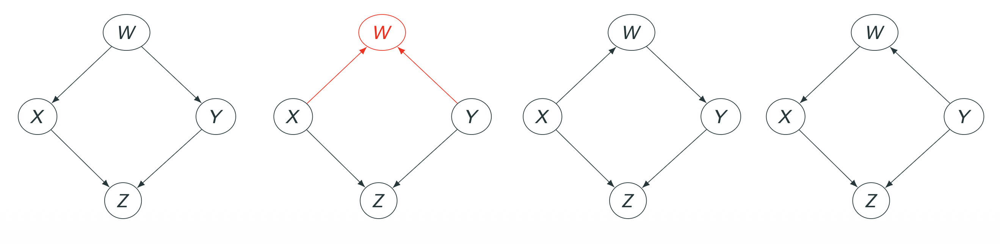
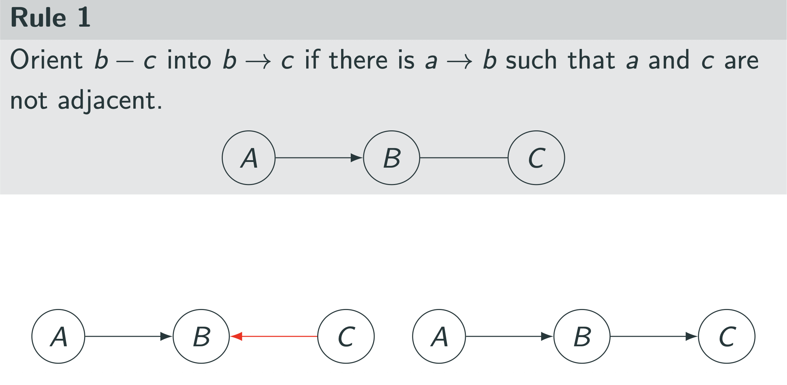
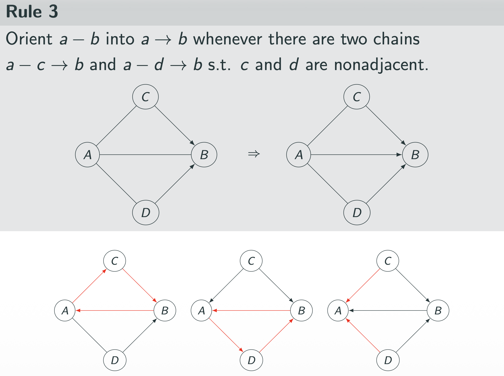

1. Introduction: Constraint-Based Approach
이전 포스트에서는 Causal Discovery를 위한 핵심 가정인 Faithfulness에 대해 다루었습니다.
이번 포스트에서는 이 가정을 바탕으로 실제 데이터에서 인과 그래프(DAG)를 찾아내는 대표적인 방법론인 Constraint-Based Structure Learning을 다룹니다.
이 방법론의 핵심 아이디어는 다음과 같습니다:
- 데이터에서 성립하는 제약 조건(Constraints), 즉 조건부 독립성(Conditional Independencies, CIs)을 찾아냅니다.
- 이 제약 조건들과 모순되는 그래프들을 후보군에서 제거합니다.
- 남은 그래프(또는 그래프들의 집합)를 결과로 반환합니다.
이 과정의 가장 대표적인 알고리즘인 PC Algorithm을 통해, 어떻게 데이터만으로 인과 구조를 복원할 수 있는지 단계별로 살펴보겠습니다.
2. Motivating Example: Reconstructing a Graph
- PC 알고리즘의 정식 절차를 다루기 전에, 4개의 변수 \(W, X, Y, Z\)로 구성된 구체적인 예시를 통해 직관을 얻어보겠습니다.
2.1 The True Model (Target)
- 우리가 찾고자 하는 정답(True DAG)은 다음과 같은 구조라고 가정합니다.

이 그래프 구조 \(\mathcal{G}\)가 암시하는 조건부 독립성(Conditional Independencies)은 무엇일까요?
\(d\)-separation 기준을 적용해보면 크게 두 가지 중요한 독립성을 발견할 수 있습니다.
- \(X\)와 \(Y\)의 관계 (\(X \perp\!\!\!\perp Y \mid W\))
- \(X\)와 \(Y\)는 \(W\)를 통해 연결(Fork: \(X \leftarrow W \rightarrow Y\))되어 있고, \(Z\)를 통해 연결(Collider: \(X \rightarrow Z \leftarrow Y\))되어 있습니다.
- Collider인 \(Z\)를 조건부로 주지 않으면 \(Z\) 경로는 막힙니다.
- Fork인 \(W\)를 조건부로 주면 \(W\) 경로는 막힙니다.
- 따라서 \(W\)만 주어졌을 때 두 변수는 독립입니다.
- \(W\)와 \(Z\)의 관계 (\(W \perp\!\!\!\perp Z \mid \{X, Y\}\))
- \(W\)에서 \(Z\)로 가는 두 경로(\(W \rightarrow X \rightarrow Z\) 및 \(W \rightarrow Y \rightarrow Z\))는 모두 Chain 구조입니다.
- Chain 구조의 중간 노드인 \(X\)와 \(Y\)가 조건부로 주어지면(Observed), 정보의 흐름이 차단됩니다(Blocked).
- 따라서 \(X\)와 \(Y\)가 모두 주어졌을 때 \(W\)와 \(Z\)는 독립입니다.
결론적으로, 이 그래프가 강제하는 조건부 독립성(CI) 목록은 다음과 같습니다: \[X \perp\!\!\!\perp Y \mid W\] \[W \perp\!\!\!\perp Z \mid \{X, Y\}\]
2.2 Finding the Skeleton (Adjacency Search)
- 이제 우리는 그래프를 모른 채, 데이터로부터 앞선 조건부 독립성만을 발견했다고 가정합니다.
Step 1: Start with a Complete Graph
- 아무런 정보가 없을 때, 우리의 최선의 추측은 모든 변수가 서로 연결된 완전 무방향 그래프(Undirected Complete Graph)입니다.
Step 2: Remove Edges based on CI (Skeleton Learning)
- 인과 구조 학습의 첫 번째 단계는 완전 연결 그래프(Complete Graph)에서 시작하여, 데이터에서 발견된 조건부 독립성(CI)을 바탕으로 엣지를 하나씩 제거해 나가는 것입니다.
- 이 예제에서는 두 가지 주요한 독립성이 엣지 제거에 활용됩니다.
1. 첫 번째 엣지 제거: \(X\)와 \(Y\)
- 우리는 데이터에서 \(X \perp\!\!\!\perp Y \mid W\)를 관측했습니다.
- 이는 \(W\)라는 공통 원인(Common Cause)을 통제했을 때 \(X\)와 \(Y\)가 독립이 됨을 의미합니다.
- 따라서 \(X\)와 \(Y\) 사이에는 직접적인 인과관계가 없으므로, \(X - Y\) 엣지를 제거합니다.
2. 두 번째 엣지 제거: \(W\)와 \(Z\)
- 또한, 우리는 \(W \perp\!\!\!\perp Z \mid \{X, Y\}\)를 관측했습니다.
- 이는 \(X\)와 \(Y\)가 모두 주어졌을 때, \(W\)와 \(Z\) 사이의 정보 흐름이 차단됨을 의미합니다.
- 따라서 \(W\)와 \(Z\) 사이에도 직접적인 엣지가 없으므로, \(W - Z\) 엣지를 제거합니다.
3. 결과: Skeleton (뼈대)
- 위 과정을 통해 통계적으로 독립인 변수 쌍들의 연결이 모두 끊어졌습니다.
- 남은 그래프는 방향성이 없는 Skeleton(뼈대) 형태가 됩니다.
- 남은 엣지: \(W-X, W-Y, X-Z, Y-Z\)

2.3 Orienting Edges (Finding V-structures)
- 뼈대(Skeleton)를 찾았으니 이제 화살표의 방향을 찾을 차례입니다.
- 이 과정의 핵심은 “두 변수가 독립이 되기 위해 어떤 변수를 조건부로 걸었는가(Seperating Set)?”를 확인하는 것입니다.
1. Unshielded Triple 식별
- 먼저 그래프에서 Unshielded Triple을 찾습니다.
- 이는 \(X - Z - Y\) 처럼 서로 연결되어 있지만, 양 끝의 \(X\)와 \(Y\)는 직접 연결되지 않은(\(X \not\sim Y\)) 구조를 말합니다.
2. Collider Test (V-structure 찾기)
이제 \(X\)와 \(Y\) 사이의 엣지를 제거하게 만든(즉, 독립이 되게 만든) 조건부 집합(Separating Set, \(S\))을 확인합니다.
일반적인 경우 (Chain/Fork):
- 만약 \(Z\)가 Chain (\(X \rightarrow Z \rightarrow Y\))이나 Fork (\(X \leftarrow Z \rightarrow Y\))의 중심이라면, 정보의 흐름을 막기 위해 \(Z\)를 반드시 조건부로 걸어야 합니다.
- 즉, \(X \perp\!\!\!\perp Y \mid Z\) 이어야 하므로, \(Z \in S\) 입니다.
Collider의 경우 (V-structure):
- 만약 \(Z\)가 Collider (\(X \rightarrow Z \leftarrow Y\))라면, \(Z\)를 조건부로 걸면 오히려 경로가 열려버립니다(d-connected).
- 따라서 \(X\)와 \(Y\)가 독립이 되려면 \(Z\)를 조건부 집합에 포함하지 않아야 합니다.
- 즉, \(X \perp\!\!\!\perp Y \mid S\) 일 때, \(Z \notin S\) 입니다.
3. 예제 적용
우리의 예시 데이터(True DAG)를 살펴봅시다.
우리는 Skeleton 단계에서 \(X\)와 \(Y\)가 \(W\)를 통해 독립임을 확인했습니다 (\(S = \{W\}\)).
구조는 \(X - Z - Y\) 형태의 Unshielded Triple입니다.
이때, 가운데 낀 노드 \(Z\)는 \(S\)에 포함되지 않습니다 (\(Z \notin \{W\}\)).
결론:
- \(Z\)가 조건부 집합에 없는데도 \(X\)와 \(Y\)가 독립이라는 것은, \(Z\)가 정보를 막고 있는 Collider임을 의미합니다.
- 따라서 우리는 다음과 같이 방향을 확정할 수 있습니다. \[X \rightarrow Z \leftarrow Y\]

2.4 Propagating Directions (No New V-structures)
이제 \(Z\)와 관련된 엣지는 방향이 정해졌습니다.
남은 것은 \(W\)와 연결된 엣지들(\(W-X, W-Y\))입니다.
여기서 가장 중요한 논리는 “우리가 발견하지 못한 V-structure를 새로 만들면 안 된다”는 것입니다.
가설 검증 (\(W\)가 Collider인가?):
- 만약 \(X \rightarrow W\)이고 \(Y \rightarrow W\)라면, \(W\)는 새로운 Collider (\(X \rightarrow W \leftarrow Y\))가 됩니다.
- Collider의 특징은 두 부모 변수(\(X, Y\))가 \(W\)를 모를 땐 독립이지만, \(W\)를 알게 되면 종속이 된다는 점입니다.
- 하지만 우리는 데이터 탐색 단계에서 \(X \perp\!\!\!\perp Y \mid W\)임을 확인했습니다. 즉, \(W\)를 알 때 오히려 독립이 되었습니다.
- 따라서, \(W\)는 절대로 Collider가 될 수 없습니다.
결론 (방향의 제약):
- \(W\)가 Collider가 되는 경우(\(X \rightarrow W \leftarrow Y\))는 불가능하므로 제외해야 합니다.
- 남은 가능성은 Fork (\(X \leftarrow W \rightarrow Y\))이거나 Chain (\(X \rightarrow W \rightarrow Y\) 등)입니다.
- 데이터만으로는 이 중에서 하나를 특정할 수 없으나(Markov Equivalence Class), “Collider가 아니다”라는 강력한 제약 조건을 통해 오답을 소거했습니다.
- 참고: 우리가 찾고자 하는 True DAG는 이 중 Fork 형태인 \(W \rightarrow X, W \rightarrow Y\) 였습니다.

3. Markov Equivalence Class
- 위의 예시에서는 W와 연결된 엣지의 방향을 특정할 수 없었습니다.
3.1 Observational Equivalence
데이터의 확률 분포(독립성 정보)만으로는 구별할 수 없는 서로 다른 DAG들이 존재할 수 있습니다.
이를 Observationally Equivalent 또는 Markov Equivalent하다고 합니다.
예를 들어, 다음 세 그래프는 모두 동일한 조건부 독립성(\(X \perp\!\!\!\perp Y \mid Z\))을 갖습니다:
- \(X \rightarrow Z \rightarrow Y\) (Chain)
- \(X \leftarrow Z \leftarrow Y\) (Chain)
- \(X \leftarrow Z \rightarrow Y\) (Fork)
하지만 \(X \rightarrow Z \leftarrow Y\) (Collider)는 \(X \perp\!\!\!\perp Y\) (Marginally Independent)이므로 위 셋과 구별됩니다.
3.2 Theorem (Verma and Pearl)
- 두 DAG가 통계적으로 구별 불가능(Markov Equivalent)할 필요충분조건은 다음과 같습니다:
- Skeleton이 동일하고,
- Unshielded Colliders (V-structures)가 동일해야 한다.
- 이러한 동치류(Equivalence Class)를 하나의 그래프로 표현한 것을 CPDAG (Completed Partially Directed Acyclic Graph) 또는 Pattern이라고 합니다.
- CPDAG에서는 방향이 확정된 엣지는 화살표(\(\rightarrow\))로, 결정되지 않은 엣지는 무방향(\(-\))으로 표시합니다.
4. The PC Algorithm
- Spirtes와 Glymour가 제안한 PC Algorithm은 위의 과정을 일반화하여 \(n\)개의 변수에 대해 효율적으로 구조를 학습하는 알고리즘입니다.
Step 1: Skeleton Identification
- 완전 무방향 그래프로 시작합니다.
- 인접한 모든 변수 쌍 \((A, B)\)에 대해 조건부 독립성 검사(CI Test)를 수행합니다.
- 조건 집합 \(S\)의 크기(\(i\))를 0부터 시작하여 하나씩 늘려갑니다.
- 만약 어떤 \(S\)에 대해 \((A \perp\!\!\!\perp B \mid S)\)가 성립하면, 엣지 \(A-B\)를 제거합니다.
- 이때의 \(S\)를 \(sepset(\{A, B\})\)로 저장해둡니다.
- \(S\)는 \(A\)와 \(B\)의 인접 노드(neighbors) 중에서 선택합니다.
Step 2: V-Structure Identification (Collider)
- Skeleton에서 서로 인접하지 않은 \(A, B\)와, 둘 다와 인접한 공통 이웃 \(C\)를 찾습니다 (\(A - C - B\)).
- 만약 \(C\)가 \(sepset(\{A, B\})\)에 포함되지 않는다면, \(C\)는 Collider입니다.
- 따라서 \(A \rightarrow C \leftarrow B\)로 방향을 설정합니다.
Step 3: Orientation Propagation (Meek’s Rules)
- V-structure로 밝혀진 방향들을 기반으로, 논리적으로 가능한 나머지 방향들을 확정합니다.
- 이때 Meek’s Rules라고 불리는 4가지 규칙을 반복 적용합니다.
- 이 규칙들은 Cycle을 생성하지 않고 새로운 V-structure를 만들지 않는다는 원칙하에 작동합니다.
Rule 1: Avoid New Collider
- 상황: \(A \rightarrow B - C\) 이고 \(A, C\)는 연결되지 않음.
- 조치: \(B \rightarrow C\) 로 방향 설정.
- 이유: 만약 \(C \rightarrow B\)라면 \(A \rightarrow B \leftarrow C\)가 되어 새로운 V-structure가 생기는데, 이는 Step 2에서 발견되지 않았으므로 모순입니다.

Rule 2: Avoid Cycle
- 상황: \(A \rightarrow C \rightarrow B\) (Chain)가 있고 \(A - B\)가 연결됨.
- 조치: \(A \rightarrow B\) 로 방향 설정.
- 이유: 만약 \(B \rightarrow A\)라면 \(A \rightarrow C \rightarrow B \rightarrow A\)로 이어지는 Cycle이 형성되므로 불가능합니다.

Rule 3: Double Triangle
- 상황: \(A - C \rightarrow B\), \(A - D \rightarrow B\)가 있고 \(A - B\)가 연결됨 (\(C, D\)는 비연결).
- 조치: \(A \rightarrow B\) 로 방향 설정.
- 이유: 만약 \(B \rightarrow A\)라면, Rule 1이나 Cycle 문제 등에 의해 \(C, D\)와의 관계에서 모순이 발생하여 Cycle이 형성됩니다.

Rule 4: Complex Cycle
- 상황: \(A - C \rightarrow D\) 및 \(C \rightarrow D \rightarrow B\) 등의 복잡한 구조.
- 조치: \(A \rightarrow B\) 로 방향 설정.

5. Summary
- 이번 포스트에서는 데이터로부터 인과 그래프를 도출하는 PC Algorithm을 상세히 살펴보았습니다.
- Constraint-Based Approach: 조건부 독립성(CI)을 제약 조건으로 사용하여 불가능한 그래프를 소거합니다.
- Logic:
- Skeleton: \(X \perp\!\!\!\perp Y \mid S\) \(\implies\) 엣지 제거.
- V-structure: \(X-Z-Y\)이고 \(Z \notin S\) \(\implies\) \(X \rightarrow Z \leftarrow Y\).
- Propagation: Cycle과 새로운 V-structure 방지를 위한 Meek’s Rules 적용.
- Result: 결과물은 Markov Equivalence Class를 표현하는 CPDAG 형태입니다. 즉, 데이터만으로는 방향을 알 수 없는 엣지가 남아있을 수 있습니다.
- PC 알고리즘은 강력하지만, 데이터의 샘플 수가 적거나 변수가 많아지면 CI Test의 오류가 누적될 수 있다는 단점도 있습니다.
- 다음 단계에서는 이러한 제약 기반 방법 외에 점수 기반(Score-based) 접근법 등을 고려해볼 수 있습니다.